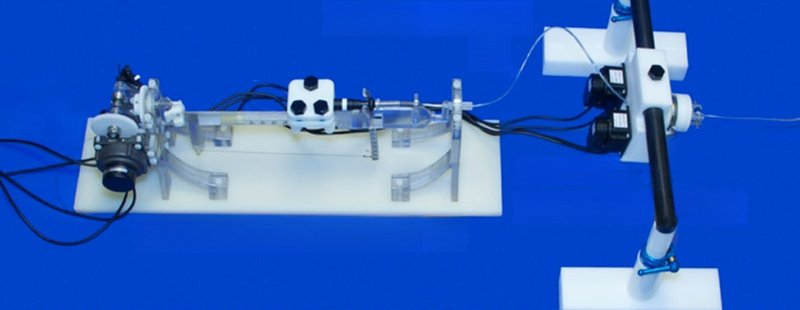

Academic bedside robots · western_thakur2009
RCNS
Remote Catheter Navigation System (RCNS / MR-RCNS)

1 / 5


- Family
- Academic bedside robots (academic)
- Devices
- 6-7 F ablation catheters (input catheter as leader, patient catheter as follower)
- Degrees of freedom
- 2 (axial, radial) in 2009 and 2013; 3 in 2016
- Push
- Friction rollers
- Twist
- Rotating drive unit
- Tested up to
- Animal
- Sim-to-real
- None found — No simulation-trained controller found for this robot.
Testing
- Highest level
- Animal
- What was tested
- 2009: bench plus 8 operators navigating a carotid model; 2013: bench and in-scanner tests; porcine in-vivo and ex-vivo tests reported in the Western thesis (ir.lib.uwo.ca/etd/3024), web summary only, animal count not read
- Key numbers
- 2009: within 1 mm and 1 deg, latency under 300 ms; 2013: delay 41+-21 ms, 2+-2 deg radial, 1.0+-0.8 mm over 100 mm axial; 2016: axial error < 1 mm over 30 mm; axial grip 4 N, radial grip 18 mN.m
Mechanism
- Push (translation)
- friction-roller (urethane drive wheel(s) with spring-loaded idler rollers; two chained active rollers from 2013)
- Twist (rotation)
- catheter in a slip-ring gantry rotated by a servo (2013: ultrasonic motors); chain drive
- Device range
- adjustable platform for different catheter gauges; 6-7 F used
- Target anatomy
- cardiac / EP catheterisation; carotid model; ablation lesions (porcine, thesis)
Sensing and interface
- Force sensing
- none
- Leader and haptics
- none; leader is a real input catheter read by optical encoders
- Imaging
- fluoroscopy (2009); MRI-compatible (2013): worst-case SNR drop 2.5%, slave 60 cm from isocentre; 2016 SNR drop < 3%, no artifacts
- Sterility
- N.R.
Size
- Footprint (mm)
- N.R.
- Mass (kg)
- N.R.
Simulation
- Simulation model
- none found
- Sim-trained controller
- none found
Versions
- Lineage
- 2009 TBME (Thakur, fluoroscopy); 2013 TBME (Tavallaei, MR-compatible, ultrasonic motors); 2016 IJCARS (3 DOF, plunger added)
Sources
- Design and Performance Evaluation of a Remote Catheter Navigation System · IEEE Transactions on Biomedical Engineering, 2009 · doi:10.1109/TBME.2009.2017203 [thakur2009_remote]
- A Magnetic-Resonance-Imaging-Compatible Remote Catheter Navigation System · IEEE Transactions on Biomedical Engineering, 2013 · doi:10.1109/TBME.2012.2229709 [tavallaei2013_mri]
- Magnetic resonance imaging compatible remote catheter navigation system with 3 degrees of freedom · International Journal of Computer Assisted Radiology and Surgery, 2016 · doi:10.1007/s11548-015-1337-4 [tavallaei2016_mri3dof]
Notes
- Notes
- Row id uses 2009 first author; the same lab filed patents and founded Vital Biomedical Technologies (web, unverified).
This record
- Read level
- full — full (2009, 2013); abstract/web (2016, thesis)
- Picture
- tavallaei2016_mri3dof Fig. 2, upper half (3-DOF MR-compatible slave: handle manipulator + catheter manipulator; embedded 969x666) ↗ — licence: publisher copyright (Springer; (c) CARS 2015); grade B
- Picture changes
- native extract; cropped to the slave half; 4 text labels and 2 arrows erased with LaMa on the plain blue backdrop (one arrow lay on the catheter manipulator's black support rod; checked at 4x zoom); not upscaled
- Found by
- academic: Search of academic bedside robots.
- Data
- JSON · YAML:
records/robots/western_thakur2009.yaml - Correction
- Suggest a correction [repository not created yet]
← Raysight PCIRNS →